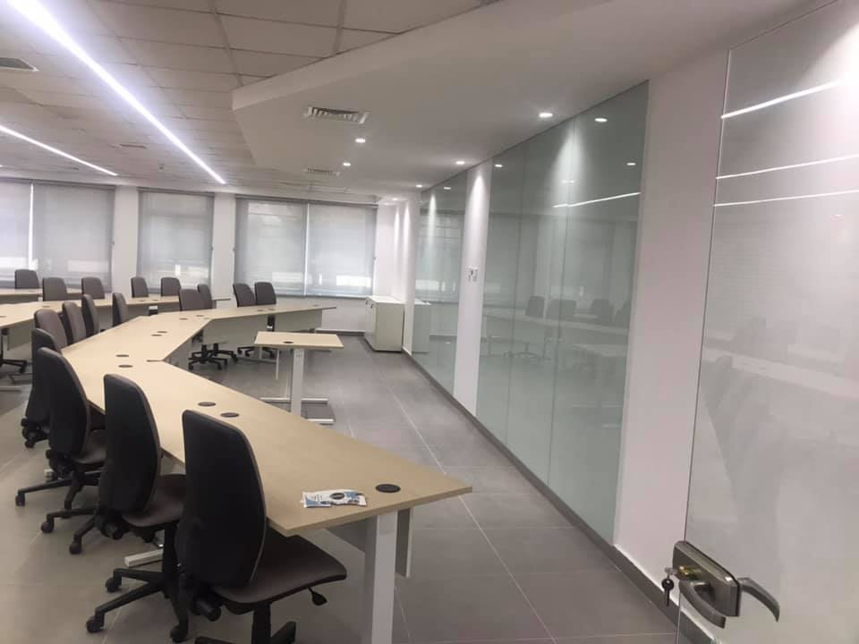
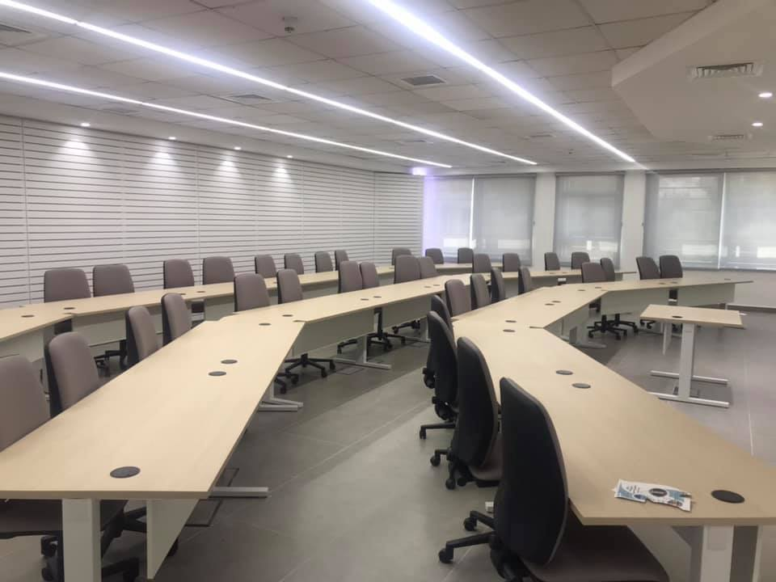
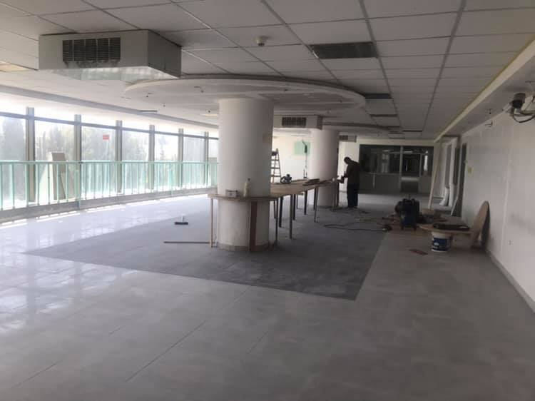

This shortcut stands for Computer Information System which is a very similar specialization to Computer Science , but with more programming and less mathematics , and there are a little more articles to memories .
  